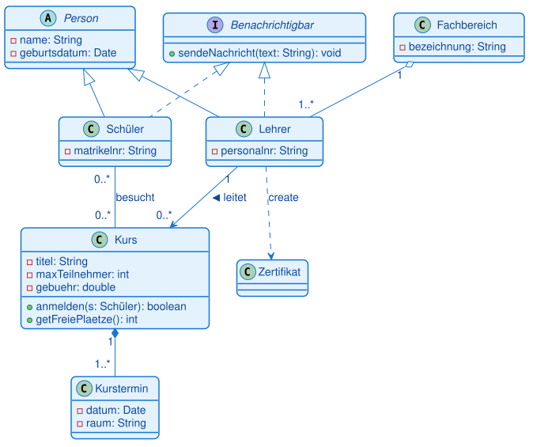
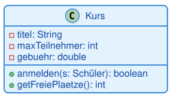
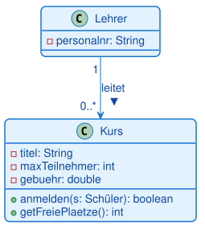
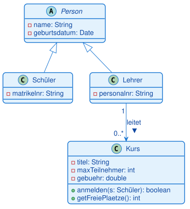
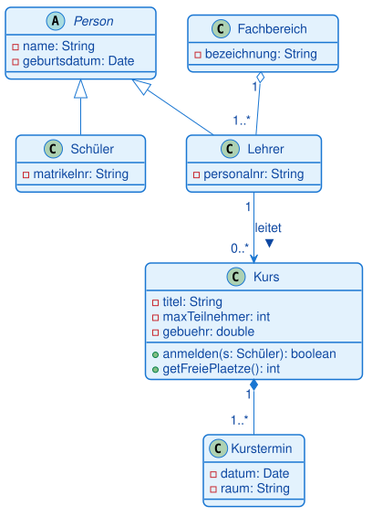
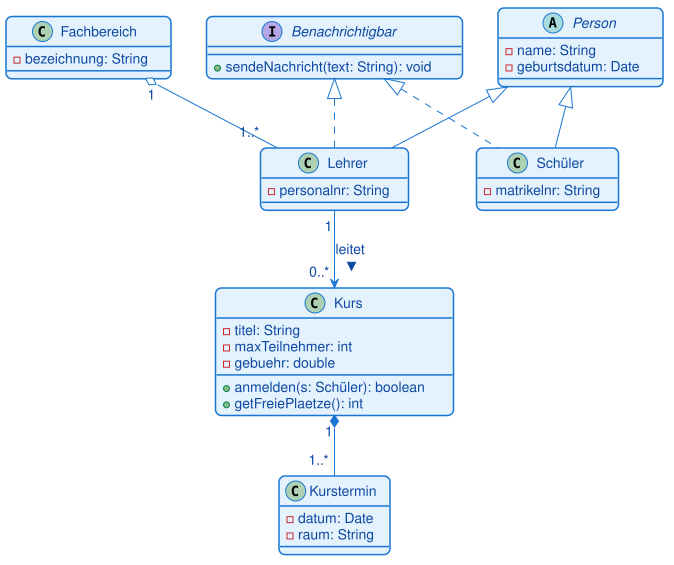
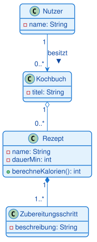

Klassendiagramm · Schritt-für-Schritt live entwickeln · Beispiel Schulverwaltung
Ein Klassendiagramm Schritt für Schritt an der Tafel aufbauen — Tutorial für dich als Dozent UML-Diagramme · Klassendiagramm · durchgehendes Beispiel: eine Schulverwaltung
Was das hier ist. Kein Foliennachlesen, sondern eine Zeichen-Anleitung: Du baust über die ganze Stunde ein einziges Klassendiagramm auf — Baustein für Baustein — und führst die Notation genau an diesem wachsenden Diagramm ein. Bei jedem Schritt steht hier exakt, was du zeichnest, was du in die Kästen schreibst und was du dazu sagst. Nach jedem Schritt siehst du ein Bild, wie dein Diagramm jetzt aussehen muss.
Das Beispiel (Schulverwaltung) ist bewusst neu — es steht in keinem Lerntext. So sehen die Teilnehmer den Stoff ein zweites Mal an einem frischen Fall, statt eine Wiederholung zu erleben.
So arbeitest du mit diesem Skript
Jeder Baustein läuft nach dem Ich – Wir – Ihr-Muster:
- Ich zeige — du zeichnest den neuen Baustein live vor und erklärst ihn (Kästen
So erklärst du es+Mit der Gruppe machen). - Wir prüfen — eine kurze Frage an die Gruppe (
Frage an die Gruppe). - Ihr macht — eine 2-Minuten-Mini-Übung an einem kleinen Nebenbeispiel, dann geht es weiter.
Die farbigen Kästen bedeuten:
- Mit der Gruppe machen — die konkreten Zeichenschritte (was ziehen, was hineinschreiben).
- So erklärst du es — der Sprechtext, den du dazu sagst (kannst du fast vorlesen).
- Frage an die Gruppe — kurze Kontrollfrage zum Mitdenken.
- Du musst wissen — Stolperstellen und Hintergrund nur für dich.
Vor dem Unterricht
Zeichenwerkzeug: Öffne draw.io (app.diagrams.net), leeres Blatt. Aktiviere links unten
über „More Shapes…" die Kategorie UML — dann liegen Klassen-Kasten und alle
Beziehungspfeile bereit.
Die drei Handgriffe, die du brauchst (einmal vorher ausprobieren):
- Klasse anlegen: Den UML-Shape „Class" (Kasten mit drei Fächern) auf die Fläche ziehen.
- Fächer füllen: Doppelklick auf eine Zeile zum Bearbeiten. Mittleres Fach = Attribute, unteres Fach = Methoden. Neue Zeile im Fach: Zeile anklicken, Enter.
- Beziehung ziehen: Mit der Maus an den Rand einer Klasse fahren, bis ein blauer Pfeil erscheint, und zur zweiten Klasse ziehen. Danach die Linie anklicken und rechts im Format-Panel die Enden einstellen (offener Pfeil, hohles Dreieck, leere/gefüllte Raute). Multiplizitäten schreibst du per Doppelklick nahe an die Linienenden.
Materialien daneben: der Lerntext „Klassendiagramme" (7.2) und das Portal zum Nachschlagen.
Tipp: Zieh dir vor Kursbeginn einmal testweise eine Klasse und eine Beziehung auf, damit du im Unterricht die Handgriffe sicher hast und nicht suchen musst.
Das Zielbild
So sieht das Diagramm am Ende der Stunde aus. Zeig es der Gruppe nicht zu Beginn — es ist deine Landkarte, damit du weißt, wohin jeder Schritt führt.

Wir bauen es von links oben (eine einzelne Klasse) bis zu diesem vollständigen Modell auf.
Zeitplan (Vorschlag)
| Zeit | Schritt | Baustein |
|---|---|---|
| 00:00–00:08 | Einstieg | Warum modellieren wir? |
| 00:08–00:23 | Schritt 1 | Die Klasse: drei Fächer, Sichtbarkeiten |
| 00:23–00:38 | Schritt 2 | Assoziation und Multiplizität |
| 00:38–00:53 | Schritt 3 | Vererbung und abstrakte Klasse |
| 00:53–01:10 | Schritt 4 | Aggregation und Komposition (Raute-Test) |
| 01:10–01:22 | Schritt 5 | Interface und Realisierung |
| 01:22–01:32 | Schritt 6 | Abhängigkeit und m:n |
| 01:32–01:50 | Schritt 7 | Schüler bauen selbst (Kochbuch-App) |
Der Einstieg
So erklärst du es
Wir planen heute Software, bevor wir sie programmieren — mit dem wichtigsten UML-Diagramm der objektorientierten Entwicklung: dem Klassendiagramm. Und wir machen das nicht theoretisch, sondern bauen gemeinsam ein echtes Modell auf: eine Schulverwaltung mit Kursen, Lehrern, Schülern. Am Ende steht ein vollständiges Diagramm an der Tafel, und Sie können jedes Zeichen darin lesen und selbst zeichnen.
Frage an die Gruppe
Sie kennen Java. Was steht in einer Java-Klasse drin? — Sammle „Attribute/Felder" und „Methoden".
Du musst wissen
Das ist der Aufhänger für alles Weitere: Ein Klassendiagramm ist Java in Kurzschrift. Wer eine Klasse schreiben kann, kann sie auch zeichnen. Halte den Einstieg kurz (max. 8 Minuten) — der Stoff entsteht gleich beim Zeichnen.
Schritt 1 — Die Klasse: drei Fächer und Sichtbarkeiten — 15 Minuten
So erklärst du es
Jede Klasse ist ein Rechteck mit drei Fächern: oben der Name, in der Mitte die Attribute (was ein Objekt weiß), unten die Methoden (was es kann). Vor jedem Attribut und jeder Methode steht ein Zeichen für die Sichtbarkeit: Minus (
-) ist privat, Plus (+) ist öffentlich. Wir modellieren als Erstes einen Kurs.
Mit der Gruppe machen
Zeichne die erste Klasse — Fach für Fach, und schreib genau das hinein:
- Klassen-Kasten auf die Fläche ziehen. Ins oberste Fach schreiben:
Kurs(Singular, groß). - Ins mittlere Fach, Zeile für Zeile:
-
- titel: String-- maxTeilnehmer: int-- gebuehr: doubleSag dabei: „Minus heißt privat. Format ist immer- name: Typ— genau wieprivate String titel;in Java." - Ins untere Fach:
-
+ anmelden(s: Schüler): boolean-+ getFreiePlaetze(): intSag: „Plus heißt öffentlich. Bei Methoden steht in Klammern der Parameter mit Typ, hinter dem Doppelpunkt der Rückgabetyp."
So sieht dein Diagramm jetzt aus:

Frage an die Gruppe
Warum sind die Attribute privat (
-) und die Methoden öffentlich (+)?
Erwarte: „Kapselung" — die Daten werden geschützt, der Zugriff läuft über Methoden. Ergänze: genau das „private Feld, public Getter", das sie aus Java kennen.
Mit der Gruppe machen
(Mini-Übung, 2 Minuten)
Lass die Gruppe auf Papier eine Klasse Schüler zeichnen: Attribute - name: String,
- matrikelnr: String, Methode + getName(): String. Danach einer nennt seine Lösung, du zeichnest
sie kurz als zweiten Kasten daneben (den brauchst du in Schritt 3 wieder).
Du musst wissen
Häufigste Fehler hier: Klassenname im Plural („Kurse"), Typ vergessen (titel statt
titel: String), Sichtbarkeitszeichen weggelassen. Bestehe von Anfang an auf dem Format
- name: Typ — das zahlt sich in jeder Prüfungsaufgabe aus.
Schritt 2 — Assoziation und Multiplizität — 15 Minuten
So erklärst du es
Klassen stehen selten allein. Eine Assoziation ist eine dauerhafte Verbindung — „kennt-ein". Wir sagen: Ein Lehrer leitet Kurse. Und wir machen es präzise mit Multiplizitäten: Zahlen an den Linienenden, die sagen, wie viele Objekte beteiligt sind.
Mit der Gruppe machen
- Zweite Klasse
Lehrerzeichnen, mittleres Fach:- personalnr: String. - Linie ziehen von
LehrerzuKurs. Als Ende beiKurseinen offenen Pfeil einstellen (gerichtete Assoziation: der Lehrer kennt seine Kurse). Sag: „Der Pfeil zeigt die Navigierbarkeit — vom Lehrer kommt man zu seinen Kursen." - Beziehungsnamen an die Linie schreiben:
leitetmit einem kleinen Dreieck ▸ (Leserichtung). - Multiplizitäten an die Enden:
- beim
Lehrereine1- beimKurs0..*Sag: „Gelesen über Kreuz: Ein Kurs wird von genau einem Lehrer geleitet — die1. Ein Lehrer leitet beliebig viele Kurse, auch mal keinen —0..*."

Frage an die Gruppe
Was bedeutet der Stern in
0..*? Und was wäre der Unterschied zu1..*?
Erwarte: * = beliebig viele (obere Schranke offen); 0..* = auch keiner erlaubt, 1..* =
mindestens einer. Merksatz: „Die Zahl steht bei der Klasse, von der aus man zählt."
Mit der Gruppe machen
(Mini-Übung, 2 Minuten)
Frage in die Runde: „Ein Kunde und seine Bestellungen — welche Multiplizitäten?" Erwartete Lösung:
Kunde 1 — Bestellung 0..*. Zeichne sie kurz an den Rand.
Du musst wissen
Stolperstelle: Multiplizitäten werden gern vertauscht (Seite verwechselt). Lies die Beziehung immer laut in beide Richtungen vor, dann fällt der Fehler sofort auf. Die einfache Assoziation (ohne Pfeil) und die gerichtete (mit Pfeil) sind beide korrekt — der Pfeil ist die Zusatzinformation „wer kennt wen".
Schritt 3 — Vererbung und abstrakte Klasse — 15 Minuten
So erklärst du es
Schüler und Lehrer haben etwas gemeinsam: beide sind Personen mit Name und Geburtsdatum. Statt das doppelt zu modellieren, ziehen wir es in eine gemeinsame Oberklasse
Personhoch — das ist Vererbung, die „ist-ein"-Beziehung. Und weil es „eine Person" als solche nie konkret gibt, machen wir sie abstrakt.
Mit der Gruppe machen
- Neue Klasse
Personoben zeichnen. Namen kursiv setzen (im Format-Panel), das markiert sie als abstrakt. Attribute:- name: String,- geburtsdatum: Date. - Deinen
Schüler-Kasten aus Schritt 1 unterPersonschieben, danebenLehrer. - Von
SchülerzuPersoneine Linie mit hohlem Dreieck (Vererbungspfeil) ziehen, Spitze zeigt aufPerson. Dasselbe vonLehrerzuPerson. Sag: „Die Spitze zeigt immer auf den Elternteil, von dem geerbt wird. In Java:class Schüler extends Person." - Aus
Persondas doppelte- namebei Schüler/Lehrer entfernen — es wird ja vererbt. Sag: „Name und Geburtsdatum stehen jetzt nur noch einmal, oben. Schüler und Lehrer erben sie."

Frage an die Gruppe
Der ist-ein-Test: „Ist ein Schüler eine Person?" — ja. „Ist ein Kurs eine Person?" — nein. Was heißt das für die Beziehung Kurs–Person?
Erwarte: Kurs erbt nicht von Person — Kurs „ist keine" Person. Vererbung nur bei „ist ein".
Du musst wissen
Der wichtigste Anfängerfehler des Tages: Vererbung dort verwenden, wo eine Teil-Beziehung
gemeint ist („Ein Motor ist ein Auto" — falsch). Der ist-ein-Test schützt davor. Abstrakt
bedeutet: von Person gibt es keine eigenen Objekte, nur konkrete Schüler und Lehrer (kursiver
Name).
Schritt 4 — Aggregation und Komposition: der Raute-Test — 17 Minuten
So erklärst du es
Jetzt zwei „Teil-Ganzes"-Beziehungen, die ständig verwechselt werden — und der einfache Test, der sie trennt. Beide haben eine Raute beim Ganzen: leere Raute = Aggregation (das Teil überlebt allein), gefüllte Raute = Komposition (das Teil stirbt mit dem Ganzen).
Mit der Gruppe machen
- Klasse
Fachbereichzeichnen (- bezeichnung: String). Linie zuLehrermit leerer Raute beim Fachbereich. Multiplizitäten: Fachbereich1, Lehrer1..*. Sag: „Aggregation. Schließt der Fachbereich, sind die Lehrer nicht weg — sie wechseln woanders hin. Das Teil überlebt." - Klasse
Kursterminzeichnen (- datum: Date,- raum: String). Linie vonKurszuKursterminmit gefüllter Raute beim Kurs. Multiplizitäten: Kurs1, Kurstermin1..*. Sag: „Komposition. Wird der Kurs gelöscht, verschwinden seine Termine mit — ein Kurstermin ohne Kurs ergibt keinen Sinn. Das Teil stirbt mit dem Ganzen."

Frage an die Gruppe
Der Raute-Test: „Ein Team und seine Spieler" — leere oder gefüllte Raute? Und „ein Haus und seine Räume"?
Erwarte: Team/Spieler = leer (Spieler überlebt), Haus/Raum = gefüllt (Raum stirbt mit). Lass sie den Test laut anwenden: „Zerstöre das Ganze — lebt das Teil weiter?"
Mit der Gruppe machen
(Mini-Übung, 3 Minuten)
Zwei Fälle an die Gruppe, jeder entscheidet leere/gefüllte Raute und begründet mit dem Test: „Playlist und Songs" (leer — Song überlebt) und „Rechnung und Rechnungsposition" (gefüllt — Position stirbt mit). Kurz auflösen.
Du musst wissen
Die zwei Rauten sind die häufigste Prüfungsfalle des Themas. Die Raute sitzt immer beim Ganzen, nie beim Teil. In der Praxis ist die Grenze manchmal unscharf — verlange deshalb immer die Begründung über den Test, nicht das Auswendiglernen.
Schritt 5 — Interface und Realisierung — 12 Minuten
So erklärst du es
Schüler und Lehrer sollen beide benachrichtigt werden können — per E-Mail, App, was auch immer. Statt das in beide Klassen zu schreiben, definieren wir einen Vertrag: ein Interface. Es sagt nur, was können muss (
sendeNachricht), nicht wie. Klassen, die den Vertrag erfüllen, verbindet man mit der Realisierung — gestricheltes Dreieck.
Mit der Gruppe machen
- Neuen Kasten oben zeichnen, in die erste Zeile schreiben:
«interface», darunter den NamenBenachrichtigbar. Ins Methodenfach:+ sendeNachricht(text: String): void. - Von
Schülerund vonLehrerje eine gestrichelte Linie mit hohlem Dreieck zum Interface ziehen. Sag: „Gestrichelt + Dreieck = Realisierung. In Java:class Schüler implements Benachrichtigbar. Eine Klasse kann mehrere Interfaces erfüllen — anders als bei der Vererbung."

Frage an die Gruppe
Woran unterscheidet man im Bild Vererbung von Realisierung? Beide haben ein Dreieck.
Erwarte: durchgezogen = Vererbung (extends), gestrichelt = Realisierung (implements). Merksatz:
„gestrichelt = nur ein Versprechen".
Du musst wissen
Prüfungsrelevant ist genau diese Unterscheidung durchgezogenes/gestricheltes Dreieck. Das
Interface erkennt man zusätzlich am «interface» über dem Namen.
Schritt 6 — Abhängigkeit und die m:n-Beziehung — 12 Minuten
So erklärst du es
Zwei letzte Bausteine. Erstens die Abhängigkeit — die schwächste Beziehung: Ein Objekt benutzt ein anderes nur kurz, ohne es zu speichern. Der Lehrer stellt am Kursende ein Zertifikat aus. Zweitens die m:n-Beziehung: Ein Schüler besucht viele Kurse, ein Kurs hat viele Schüler.
Mit der Gruppe machen
- Klasse
Zertifikatzeichnen. VonLehrereine gestrichelte Linie mit offener Pfeilspitze zuZertifikat, beschriftet«create». Sag: „Abhängigkeit — der Lehrer erzeugt das Zertifikat im Moment, speichert es aber nicht als Attribut. Gestrichelt = kurzfristig, ‚benutzt-ein'." - Linie zwischen
SchülerundKursziehen, beschriftenbesucht, Multiplizitäten0..*an beiden Enden. Sag: „Das ist eine m:n-Beziehung: viele zu viele. Ein Schüler besucht mehrere Kurse, ein Kurs hat mehrere Schüler."
Frage an die Gruppe
Warum ist Lehrer–Zertifikat gestrichelt, aber Lehrer–Kurs durchgezogen?
Erwarte: Zertifikat wird nur kurz benutzt/erzeugt (Abhängigkeit), der Kurs wird dauerhaft „gekannt" (Assoziation, als Attribut). Leitfrage: „Wird es als Attribut gespeichert?"
Du musst wissen
Jetzt steht das vollständige Zielbild an der Tafel. Geh es einmal langsam mit dem Finger ab und
lies jede Beziehung laut vor — das ist die beste Zusammenfassung. Die m:n-Beziehung löst man in der
Umsetzung später oft über eine Zwischenklasse (z. B. Anmeldung); für heute reicht die
m:n-Assoziation.
Schritt 7 — Jetzt die Schüler: selbst modellieren — 18 Minuten
So erklärst du es
Sie haben alle Bausteine gesehen. Jetzt modellieren Sie selbst — an einem neuen Beispiel: einer Kochbuch-App. Zeichnen Sie in draw.io oder auf Papier.
Mit der Gruppe machen
(Aufgabe an die Gruppe)
Gib die Aufgabe wörtlich aus:
Modelliere eine Kochbuch-App mit diesen Klassen und Beziehungen: - Ein Nutzer (
name) besitzt beliebig viele Kochbücher (titel). - Ein Kochbuch enthält beliebig viele Rezepte (name,dauerMin, MethodeberechneKalorien()) — die Rezepte existieren aber auch ohne das Kochbuch weiter. - Ein Rezept besteht aus mindestens einem Zubereitungsschritt (beschreibung) — verschwindet das Rezept, verschwinden die Schritte.Setze Sichtbarkeiten, Multiplizitäten und die richtigen Beziehungsarten (Assoziation, Aggregation, Komposition).
Geh herum, gib Hinweise. Nach ca. 10 Minuten gemeinsam auflösen — zeichne die Musterlösung vor:

Auflösung, laut mitsprechen: Nutzer–Kochbuch ist eine Assoziation (1 zu 0..*, „besitzt").
Kochbuch–Rezept ist eine Aggregation (leere Raute — das Rezept überlebt allein). Rezept–Zubereitungsschritt
ist eine Komposition (gefüllte Raute — der Schritt stirbt mit dem Rezept, 1 zu 1..*).
Du musst wissen
Das ist der Lernbeweis der Stunde. Wer hier Aggregation und Komposition richtig setzt und die Multiplizitäten begründet, hat das Thema verstanden. Häufige Fehler beim Herumgehen: Rezept–Schritt als Aggregation (falsch, Test anwenden!) und fehlende Multiplizitäten.
Abschluss
So erklärst du es
Zwei Sätze zum Mitnehmen. Erstens: Ein Klassendiagramm ist Java in Kurzschrift — drei Fächer, Sichtbarkeiten, und Beziehungen, die man mit einfachen Fragen auseinanderhält: ist-ein (Vererbung), kennt-ein (Assoziation), Teil-von mit Raute-Test (Aggregation/Komposition), erfüllt-Vertrag (Interface), benutzt-kurz (Abhängigkeit). Zweitens: Fangen Sie immer bei den Klassen an, dann die Beziehungen, dann die Multiplizitäten.
Du musst wissen
Verweis fürs Selbststudium: der Lerntext „Klassendiagramme" (Portal) mit allen Beziehungsarten, Referenztabelle, „Typische Fehler" und Übungssatz. Das nächste Diagramm bringt das System in Bewegung — Aktivitäts- oder Sequenzdiagramm.